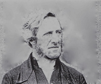

诗人小传
在诗歌史上，汤姆斯·凯立的名声，几乎直逼比他早半个世纪的查理卫斯理。虽然他们相处在不同的时代里，但每当我们唱他们所写的诗歌时，总是觉得这些诗是在永远常新的十字架之下写的，都是被神羔羊大爱激励而发出的心声。不只是他们俩人如此，其实我们可以从诗歌史上发现一条定律：最卓越的教会诗人，往往是诞生在圣灵水流最激荡最壮阔的时代里。当神的教会要往前时，最阻拦神的见证的，往往是已经成形的宗教世界，但是清心跟随主的子民从不委屈神的见证而有所妥协，他们注视升天掌权基督的荣耀，而力抗宗教世界。这些争战与神家的属灵前途息息相关，每每进行到最炽烈、最危急的关头时，神的子民是凭什么而得胜呢？乃是赞美！他们口唱新歌、仰望羔羊，就脚踩蛇蝎，击溃仇敌在宗教世界里发酵的势力。
因此，每一位诗人身上，都有这个特点：他们注视十架得胜羔羊、升天得荣基督，仇敌权势在他们眼目中如同无有。凯立就是这样的一位诗人，他一生忠诚跟随主，从不与宗教权势妥协，然而今天我们唱他的诗歌时，却一点也闻不到七倍烈窑的火燎味，而是四溢基督的馨香！
钉十架的基督定夺了他的一生
诗人凯立，于一七六九年七月，出生在爱尔兰皇后郡的盖力卫尔（Kellyville in Queen’s County）。他的父亲是爱尔兰法院的法官，所以他从都柏林大学毕业时，就有意献身法津。但是神在他身上有祂的美好的计划，就在他面临抉择时，扭转了他一生的道路。
当他在研读法津文献时，为了追本溯源，他居然学会了希伯来文，这样他就可以涉猎古代，如闪族的法律。当时他所用的一本希伯来文汇编的作者——罗曼尼（William Romaine）是一位敬虔人，凯立因着对他发生兴趣，就读起他的另一本著作一一福音教义（Evangelical Doctrines），圣灵也藉着这本书的信息，在他里头工作，光照他，叫他在神面前切实地认罪悔改了。
如今活着乃是基督活在里面
凯立知道他的罪，被主宝血洗净了；但他马上发现，他并不能从罪恶的权势下释放出来，他对他自己的光景仍然满了烦躁不安。他自己专攻法律，更叫他明白：在神的完全律法之下，他只有被定罪的份。怎么办呢？年轻的凯立，就尽力改革自己，但严厉地对待自己，不时地禁食祷告，好像一个禁欲主义者一样。他以为只要藉着这些善功，除去邪情私欲，就可以讨神的喜悦了。过了一段时间，他和保罗一样，才发现原来他整个人里面，根本就没有良善，罪就调在他的性情里面，他真是苦啊！直到这时，神的光才照亮他：主钉十架，不但流出血来，叫他的罪得赦免；而且主的身子，也舍了，替他承受律法的咒诅。因此，乃是因信接受这份恩典，才能叫他在神面前称义的，而非靠着他的行为，或任何善功。下面有两首诗最足以诠释他此时所蒙属灵的大转机：
恩典——最甜天籁（Grace is the Sweetest Sound）
（一）竟然绕我们楣，恩典——最甜天籁。
良心控告、公义蹙眉，惟它驱我惊骇。
（二）它是亮光自由，释放罪律囚奴，
填墓威势，恩典除透，夸胜死亡阴府。
（三）心灵贫户！恩典乃是敞开宝库，
涌出奇妙医治活泉，永远你心内住。
（四）我们尽唱恩典——喜乐、奇妙题目，
恩典先沐，荣耀随满，与主同王永远。
上面一首说到恩典，下面一首则说到十架的救赎：
赞美救主，顺服至死（We Sing the Praise of Him Who Died，1815）
（一）赞美救主，顺服至死，死于咒诅十架，恩深；
世人轻蔑，我却注视，并将世界当作有损。
（二）十架如嵌金句辉煌：“神就是爱”，荧荧可见；
神的羔羊既挂木上，裂天倾下旷世恩典。
（三）十架除去我们罪担，蛰睡心灵得以苏醒；
每一苦杯变为甘甜，盼望满怀，雀跃死荫。
（四）怯懦灵魂，今得刚毅，软弱膀臂，争战奋兴；
十架扫空墓中惊惧，死床之上铺设光明。
（五）化除咒诅，保证主爱，十架流出生命恩膏，
在此，罪人避难所在，在天，圣徒赞美所绕。
握有绝对权柄的主，为着祂家中的需要，就在短短的时间之内，把“重生得救”，和“从律法中得自由”两层经历，扎实地作在凯立里面，不但叫他享受了在基督里的平安，也夺了他的心，视基督为至宝，一生忠诚服事祂。
蒙召跟随羔羊点燃复兴的火
一七九二年，诗人二十三岁，他决定答应主的呼召，放下律师的锦绣前程，一生单一来服事主。起先，他被爱尔兰的国立教会按立为传道人。当时爱尔兰教会的光景非常死沉，很少传讲福音。诗人既被主爱激励，就非常不满于现状，要起来传福音。主也量给他另外一位同伴——希尔（Roland Hill）弟兄，跟他有同样的负担和感觉，俩人交通以后，就决定不顾一切压制，为主往前。
他就开始每个主日下午在都柏林传福音信息。他的灵炙热如火，马上就点燃起弟兄姊妹向主的心。这种热切要主的光景，叫那些愚民高枕的牧师，坐立不安，嫉妒他们，想法子要除掉他。他们所带来的震撼力，不只是震动了宗教领袖，主要是暴露了国立教会组织的根本错谬——用世界的利益、方法和原则，来组织严密的宗教，或许能塞住人的宗教需求，但绝对不能满足神，而且这种组织发展成为一道雄厚的城墙，阻拦了神见证的往前，并扑灭所有圣灵的火苗。
因此，这个复兴的火才点燃不久，它的影响力就在神的儿女中间很快地蔓延开来，国教领袖们就“合城不安”。有的人说，他太疯狂了；有的人说，他的话太属灵兮兮，不符合社会需要；有的人说，他讲道太不婉转了；有的人说，像他这样爱主太枉费了，会叫教会失去许多世上的好处。许许多多的声浪，虽然说法不同，却汇成一种声音，就像是主受审的那天，听汇成的那个声音：“除掉祂！除掉祂！除掉祂！”最后，都柏林的总主教浮乐（Dr．Fowler）也亲自去听他讲道，问明了他所根据的教义原则后，就决定：开除他和希尔俩人，而且所有都柏林地区的讲台都向他们关闭！
经历基督羞辱而持定升天基督 他们俩人毫不妥协地离开了国教。国教虽然向他们关闭，但主的门却是无人能关的。他们离开后，灵更高昂自由，因为他们可以按着主给他们的话语，完全释放出来，没有人的顾忌，和组织的辖制。当时，国教以外的独立教会，仍有向他们开门的，他们可以自由地传信息。此外，他自己也在都柏林一带建立好几处聚会，在神的儿女中间辛勤地牧养他们。
虽然如此，这种与宗教权势之间争战的经历，仍叫他受尽许多十字架的苦难，使他深深地体会到什么是基督的羞辱。他是一个真为主受苦的人，绝对不为自己求什么利益和地位，完全为神的儿女摆上。十字架在他身上，不是一个名词，乃是一个实际，一个生命。藉着进入主的苦难，他也进入了主升天得荣的境界。那一位得胜掌权的羔羊，一直是他一生的注视，叫他荣上加荣逐日变化，像从主的灵变成的。这一点是他诗歌最突出的特征，也是他许多诗歌的主题和灵感的泉源。
诗歌介绍
他的代表作如下：
从前那戴荆棘的头（Thy Head，Once Crowned with Thorns，1820）
（一）从前那戴荆棘的头，今戴荣耀冠冕；
救主耶稣，我们元首，祢今已升高天。
（二）祢是地上圣徒之乐，祢是天上之光；
祢今领我饮于爱河，使我知其深广。
(三)主，将祢的羞辱、权柄，一并赐给我们；
地虽否认祢的微名，神却使祢高升。
（四）凡肯与祢在世同苦，也要同荣在天；
所以求主使我坚固，鄙视世界恩典。
（五）十架于祢虽是辱、死，在我却是恩典；
也是我的荣耀、权势，我的永远安宁。
这首诗歌，是他诗中最有名的一首，这位曾经被杀、今却得荣的神羔羊，一直是他前头的喜乐，叫他一生欢然奔十架路程，视界被神的荣耀所充满。这首诗常在擘饼聚会中使用，而将整个聚会提到天的境界，吸引神的儿女在灵里伏视神的羔羊。
讲到十架道路这一方面的诗歌，还有一首非常杰出的：
主，接纳我们的诗歌（Lord，Accept Our Feeble Song）
（一）主，接纳我们的诗歌，虽然声音顶柔弱；
我们述说祢的恩笃，因祢是我们救主。
（二）因祢舍去荣耀、丰富，祢的信徒才得福；
祢变贫穷，叫祢信徒，因祢享荣耀、丰富。
（三）天堂有何使祢心厌？世界有何使祢羡？
因而祢就离天临世，孤单、凄凉直到死？
（四）祢在天上何等荣耀！祢在世上何萧条！
祢早已知此行艰难，只因爱我不计算。
（五）当我想到祢的良善，就不禁又喜又惭！
喜，因祢能这样爱好；惭，因我这样还报。
（六）但我们望那日快到，脱尽所有的阻挠；
那时我们进荣耀里，要照本分服事祢。
（七）现今我们等在这里，因这盼望受策励；
主，使我们活着为祢，直到天上同聚集。
神的羔羊，一直是他赞美的中心。他描写羔羊的升天得荣特别生动，好像使徒约翰一样，看见了天上一次又一次的异象，而写下了他的诗歌。下面几首诗歌都是这方面的：
看哪！圣徒，荣耀光景（Look，Ye Saints！the Sight is Glorious，1809）
（一）看哪！圣徒，荣耀光景：忧患之子得胜回，
赢得争战，宝座欢登，今得万膝齐拜跪：
“冠祂！冠祂！冠祂！冠祂！今得冠冕荣耀归。”
（二）耶稣得胜掳掠仇敌。天使争先来加冠；
祂登宝座能力无匹，穹苍回响羔羊赞：
“冠祂！冠祂！冠祂！冠祂！万王之王今加冠。”
（三）罪人昧于救主至尊，反以荆冕来相赠；
而今圣徒欢拥主身，归祂衔下颂祂名：
“冠祂！冠祂！冠祂！冠祂！宇宙满溢君王颂。”
（四）听哪！欢声响彻穹苍，声和嘹亮凯歌扬；
赞美耶稣荣耀至上，喜乐无穷荣耀彰：
“冠祂！冠祂！冠祂！冠祂！万主之主，王中王。”
这首诗描写主的加冠，非常生动。启示录里说，“祂头上戴着许多冠冕”，诗人在此至少提到了三顶冠冕。他特别点出荆棘冠，是三顶冠冕中最尊贵、最美丽的一顶，这顶冠冕赢得千万人的心来归祂！
还有一首也是描写主的升天的：
听啊，千万金琴争鸣（Hark！Ten Thousand Harps and Voices，1806）
（一）听啊！千万金琴争鸣，奏出天上赞美音，
耶稣掌权，诸天欢腾，神爱处处掳人心。
宇宙归心宝座固，权柄惟独归耶稣。
(二)歌颂救主如何降下，在地微行肩头重，
而今所有权柄赐祂，通行诸天荣耀中。
祂一生是我诗题，甘甜感觉惟在伊。
（三）祢的荣耀照亮诸天，并使一切焕然新，
祢的微笑在地缠绵，所有圣徒喜乐奔。
竟有“爱”使神化身，这爱神圣我永分。
（四）荣耀的王，永远救主，祢配加冕难述尽，
祢的子民既蒙血赎，谁能使与祢爱分？
恩典作我年岁冠，直到永远面对面。
（五）救主，求祢早日显现，得赎日到乐无比，
不但震地也要震天，可畏呼声四响起。
一路被提我欢唱：“荣耀归给我君王。”
凯立实在是认识主的人，他描写这位基督虽然升天，却仍带着人性调在地上圣徒的生活里。诗人也不让天使在赞美救主升天的事上，专美于前，他写了另一首诗，说明地上圣徒，比天使更能摸着宝座上基督的心：
颂赞声音何等难得（How Pleasant is the Sound of Praise）
（一）颂赞声音何等难得！所以应当无间时刻；
如果我们自甘缄默，石头也要说话相责。
（二）我们应当高声颂美那用己血买我们的；
祂替我们备尝死味，祂为我们费尽心力。
（三）此世有一特别诗歌，惟独蒙恩罪人会唱；
此外无人懂那音乐，因不知其意义之纲；
（四）天使虽能欢然承认怜悯如何由血洞晓，
但是他们不像我们能以证明这血功效。
（五）天使虽能赞美拜朝，说神是神，向神恭敬；
我们却能欢乐唱道：祂在宝座还带人性。
（六）哦，主，我们赞美那使祢来流血受死的爱；
但愿不久在天相值，向祢赞美，向祢敬拜。
认识“锡安”的宝贵而浇奠一生
表面上看来，凯立脱离组织庞大的国教，却去一些规模小而各自独立的教会服事主，似乎是一件很傻的事；其实则不然，诗人是真正认识教会意义的人。在他的诗歌中，他很喜欢以“锡安”作表号，来说明教会的属天、属灵的本质。他深深知道一件事，就是：神在他们清心跟随主的人身上，有那么厉害的剥夺，使得他们在人的眼中，似乎是微小薄弱的，但是在神的眼中，却完全不一样；因为神所要的，是与祂自己性情相匹配的、能够作祂真实见证的。因此，诗人不希奇、也不羡慕那高大却属地的“殿宇”，这些中看的事物，到了那一日，都要拆毁，一块石头不叠在另一块石头上。神所要的是“锡安”——就是一班显出属天性情的子民。下面这首诗说明凯立是有教会异象的人：
锡安雄踞，群山围绕（Zion Stands with Hills Surrounded，1806）
（一）锡安雄踞，群山围绕，四围火城是神能力，
击败仇敌狼狈遁逃，纵使君王群对立。
欢唱，锡安！荣耀命运在你前。
（二）最密友谊至终变质，天地震动也要易位，
母亲不再怜恤儿子，所有联结无不崩溃。
但神大爱，信实保惠在身边。
（三）为叫器皿更显透亮，或置烈窑加以试炼，
火中乍见一位人子，祂何珍惜眼瞳人。
以马内利，永远覆翼祂锡安。
主的再来，也是诗人赞美的题目，我们举他的一首诗为例：
那从以东来的，是谁（Who is this that Comes from Edom，1809）
(一)那穿殷红血溅衣裳，从以东来的，是谁？
宣告群奴今得释放，并得恩赐作礼馈。
独踹酒醡何壮哉！掳掠仇敌何豪迈！
（二）装扮华美，能力大广，阔步而行是救主！
祂是余民惟一异象，荣耀充满不他顾。
救赎之年来搭救，耶稣降临伸冤仇。
（三）祢的征衣为何溅血？乃因杀戮仇敌染，
不留一个没有消灭，不留余地需再残。
撒但荣华如扫地，权势已溃不再起。
（四）大能救主永远掌权，配得赎民昼夜颂；
血泪赢得头上冠冕，说明祢的救赎功：
祢民对头作脚凳，冕下膏油裹万民。
从祂十架伤痕流出对付仇敌的兵器
凯立不但是诗人，也是作曲家。他本人有极高的文学天赋，对圣经原文的修养也很深，他一生的经历，则更帮助他进入圣经的灵里，因此我们唱他的诗歌时，实在可以感受到真理、灵感和诗的感觉三全其美。他在牧会的时候，往往灵感一来，他就顺着感觉用诗歌发表出来。诗一写出来之后，就交给弟兄姊妹去唱，大家争相传颂，就不胫而走，流传到其他的教会去了；甚至从前反对他的人，也把他所写的诗收入他们的诗集里。
凯立自己是诗人，他也很爱收集别人所写的好诗。早在一八○二年他就编出第一本诗集给教会使用，以后他自己不断地有佳作发表。到了一八五三年所出的第七版诗集Hymns on Various Passages of Scripture中，他个人所写的诗，就有七百六十五首，到本世纪初年时，仍有八十七首广被众教会采用。特别是普里茅斯的弟兄们最爱唱他写的诗，大概是凯立本人有许多的经历，和弟兄会创始人达秘相同吧一一他们同是爱尔兰人，从都柏林三一学院毕业，原来都是攻法律的，因看见羔羊的异象而蒙召，一生和国教的权势争战；所不同的是凯立早生了半个世纪而已。
诗人睡了等候更美复活
诗人一生殷勤服事主，直到一八五四年，他八十五岁，有一天他正在传信息时，心脏病发作，他就倒在讲台上，翌年才睡在主里。当他弥留之时，弟兄们围绕他唱诗篇二十三——“耶和华是我的牧者”来扶持他；他听了就以微声说：“主是我的一切！”他临终前最后的一句话是：“不是我的意思，乃是祢的旨意得成就。”诗人带着一生争战而来的伤痕，去见他的主，而把争战的兵器一一诗歌——留给了后人。
最后，我们以他的一首晚祷歌Through the Day thy Love has Spared Us作结，这个晚祷毋宁说是他一生睡了之前的祷告：
（一）白昼旅人因“爱”赶路，黑夜今到工将结；
漫漫长夜主作守护，不容仇敌扰安歇。
耶稣，大能保惠者，投身祢怀何甜妥。
（二）由地去天，清心客旅，暂居仇敌洞穴里，
若要躲过今生惊惧，惟有安稳主膀臂。
直到短昼如飞去，更美复活永安息。